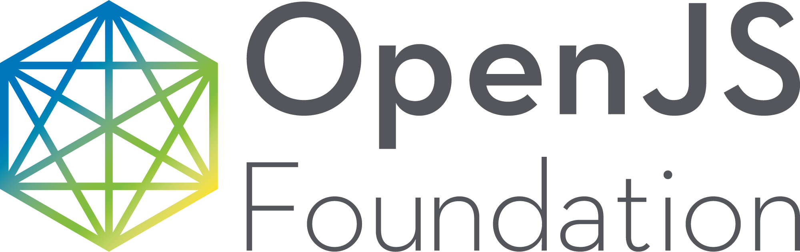

<div class="product-summary">
  <div class="wrapper">

    <h2 class="summary-heading">HospitalRun is an offline-first <a target="_blank"
        href="https://www.docker.com/">Docker-based</a> EHR - HIS application.</h2>

    <div class="features">

      <div class="feature-row">
        <div class="feature-item">
          <h3 class="feature-heading">For the Developing World</h3>
          <p class="description">HospitalRun is built to provide the most modern hospital information system possible to
            the least resourced environments. <a href="/blog/2016/06/why-hospitalrun">Read why</a>.</p>
        </div>

        <div class="feature-item">
          <h3 class="feature-heading">Offline Enabled</h3>
          <p class="description">HospitalRun is designed to allow records to be carried to remote clinics. It works <a
              target="_blank" href="http://pouchdb.com/">when there is no Internet</a>, and <a target="_blank"
              href="http://couchdb.apache.org/">syncs when there is</a>.</p>
        </div>
      </div>

      <div class="feature-row">

        <div class="feature-item">
          <h3 class="feature-heading">Intuitive</h3>
          <p class="description">HospitalRun is focused on great user experiences for clinicians, admins, and even <a
              href="https://github.com/HospitalRun/hospitalrun-frontend/blob/master/README.md"
              target="_blank">contributors</a>.</p>
        </div>

        <div class="feature-item">
          <h3 class="feature-heading">Saving Time</h3>
          <p class="description">HospitalRun features are optimized for the one resource we can't make more of: people's
            time.</p>
        </div>

      </div>

      <div class="feature-row">

        <div class="feature-item">
          <h3 class="feature-heading">Open Source</h3>
          <p class="description">The project encourages microindustry around the deployment of the system, but <a
              href="https://github.com/HospitalRun/hospitalrun-frontend/blob/master/LICENSE" target="_blank">the code is
              free and open source</a> and always will be.</p>
        </div>

        <div class="feature-item">
          <h3 class="feature-heading">A Platform for Partnering</h3>
          <p class="description">We want the project to bring people from the NGO, government, and technology sectors
            together to solve a world-changing problem.</p>
        </div>
      </div>

    </div>
    <!--/.features-->

    <div class="why-hospitalrun">

      <blockquote>
        <h2>"Building software for the developing world is about embracing the realities of lower-resource settings as a
          driver - rather than a constraint - for innovation."</h2>
      </blockquote>

      <p class="read-more"><a href="/blog/2016/06/why-hospitalrun">{% include icons/icon-octicon-file.html %} Read
          more</a> about why we're making HospitalRun.</p>

    </div>

    <div class="sponsors">

      <div class="feature-item">
        <h2>Hosted by</h2>
        <a href="https://openjsf.org/" target="_blank" rel=”noopener”></a>

        <h2>Supported by</h2>
        <a href="https://www.digitalocean.com" target="_blank" rel=”noopener”></a><a href="https://www.netlify.com" target="_blank"
          rel=”noopener”></a>
      </div>
    </div>

  </div>
</div>